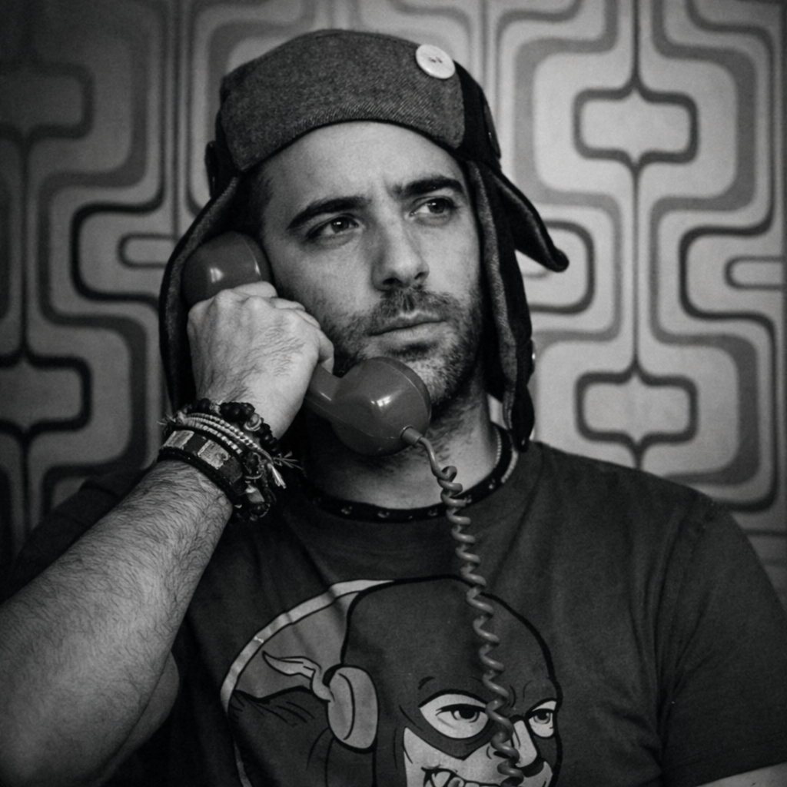

Des séries longues sur la marque, le marketing et la gouvernance de ce qu'on représente. Pas des conseils génériques. Des questions qui font un peu mal.

Auteur · Praticien · Luxembourg
Treize chapitres. Treize questions qu'on évite parce qu'elles obligent à répondre. De la brand equity à la gestion de crise — le fil conducteur est toujours le même : qui décide, qui fait vivre, qui répond ?
Lire les 13 chapitres →Praticien qui théorise. Service marketing & digital au CIGL Esch (Luxembourg). Master 2 avec Aaker, Kapferer, Coombs réellement étudiés — pas cités pour légitimer une facture.
La question n'est pas comment tu communiques. Elle est qui décide de ton identité, qui la fait vivre, qui répond quand elle craque.
Angles Morts, c'est le nom de la newsletter. Un angle mort, ce n'est pas ce qu'on fait mal. C'est ce qu'on ne voit pas, même quand on est concentré, même quand on fait correctement son travail.
Chaque série part d'une question qu'on évite souvent — parce qu'elle oblige à répondre. Pas de conseils applicables à n'importe qui. Un angle qui déplace.